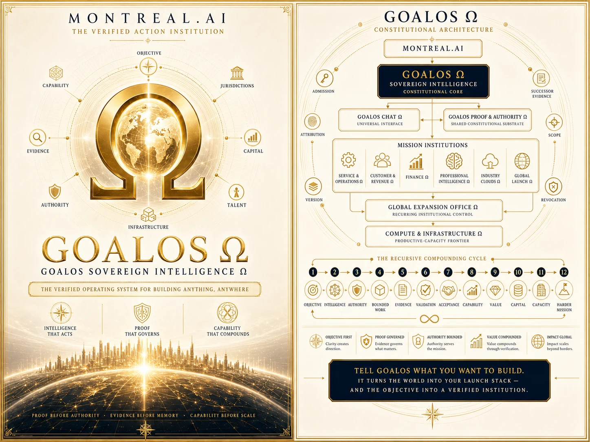
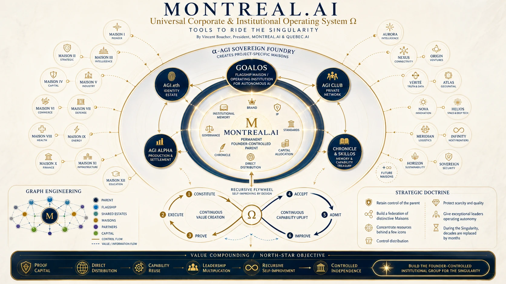

Public Institution P5
A public standard for frontier evaluation, governed improvement, independent validation and evidence-bound deployment.
Enter the institutionGoalOS Ω
The constitutional core that turns a consequential objective into bounded action, evidence, acceptance, memory and compounding capability.
The crown jewel is the institution
The defensible reserve is the accumulated graph of customers, missions, evidence, evaluators, methods, rights, failures, operating history, trusted capabilities and measured successor performance. Models remain probabilistic. GoalOS makes their institutional use bounded, testable, inspectable, attributable, revocable, repairable and replayable.
The Singularity Institution
A public standard for frontier evaluation, governed improvement, independent validation and evidence-bound deployment.
Enter the institutionThe public-safe suite for proof, governance, memory, identity, routing, bounded RSI and capacity allocation.
Open P4Bounded improvement loops and public demonstrations exist. General RSI, official authority and external outcomes are not claimed.
The verified action institution
Sovereign Intelligence is the constitutional core connecting objective, intelligence, authority, bounded action, evidence, accountable acceptance, memory and capital.
Every accepted mission changes the institutional graph. Every Chronicle decision controls what survives. Every fresh successor tests whether the institution actually improved.
Freeze the consequential objective, accountable principal, acceptance test and stop conditions before work begins.
Full institutional plate
The source plate is preserved as a detailed research artifact. It describes an institutional architecture and does not constitute a field-validation result.

Constitutional architecture

Mission institutions
Institution formation across entities, capital, talent, infrastructure and markets.
Research, analysis, drafting and decision support—subject to the relevant professional and authority boundary.
Acquire, serve, retain and expand customers through proof-carrying commercial systems.